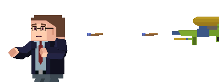
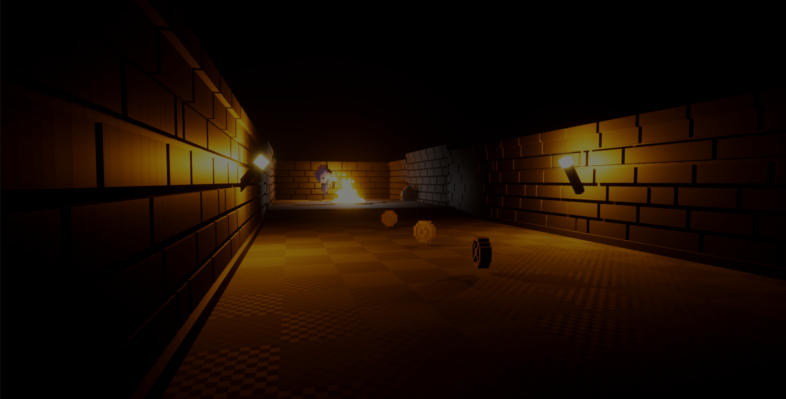

As a future video games programmer, I try to participate in the most game jams or hackathons my schedule allows.
So far, I have participated to ConUHacks, bringINTon and Ludum Dare.
In my spare time, I enjoy volunteering at DreamHack Montreal, a yearly event about professional gaming and LAN competitions, for which I've been part of since 2016.
Project "Limbblade"
This is a collaborative project done with Robert Tran for the game jam Ludum Dare 44.
It was completed within 20 hours, and it is an adventure game made with Unity Engine, where the theme "Your Life is Currency."
Project "slacker-tracker"

This is a game I've started in the class of Game Engine I, with prof. Marc-Andre Larouche.
Created in Unity Engine, this is a casual first person shooter, where you must maintain the workplace productivity by shooting your employees with a toy gun.
Project "Unnamed Dungeon"

This is the current project Alejandro Flores and I are collaborating on. It is our final project submission for Game Engine III, with prof. Felix Soumpholphakdy.
It is a 2.5D dungeon-crawler, where the player is a Skeleton whom must defeat Humans in order to regain humanity.